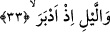
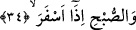

birer öğüt değildir. Onlar kötü tercihleri sâyesinde öğüt almaktan yüz çeviriyorlar.
Görülmez mi ki Allah; “Böyleyken onlara ne oluyor ki öğütten yüz
çevirmektedirler.” (el-Müddessir, 74/49) buyuruyor.
“Andolsun aya” âyette yer alan “vel kameri” üzerine yemin edilen nesnedir ve kasem
vavı dolayısıyla mecrurdur. Yâni aya kasem olsun ki mârifet ve eceller o ayın
vakitlerine bağlanmıştır.
Fethurrahman’da deniyor ki: Bu, aya şeref isnâdı yoluyla yapılan bir yemindir. Bu
yemin aynı zamanda ayın çeşitli hareketleri noktasında Allah’ın kudret ve mûcizesi
üstüne düşünmeye dâvet eden bir yemindir. Ayın sözkonusu olan bu hareketleri -
çokluğuna ve değişik yörüngelerde bulunmasına rağmen- bir tek sistem üzere olup asla
bozukluk göstermez.
Ebu’l-Leys’e göre “andolsun aya” ifâdesini “andolsun hilali yaratana” şeklinde
anlamak gerekir.
33. Dönüp gitmekte olan geceye,
“Döndüğü” ayrılıp gittiği “zaman geceye”. Âyette yer alan “edber” fiilinin kökü
olan “idbar” gelmek, yönelmek anlamına gelen “ikbâl” kökünün zıddıdır.
34. Ağarmakta olan sabaha andolsun ki,
“Ağardığı” ve açıldığı “zaman sabaha”… Kamus’ta sabah anlamına gelen “subh”
kelimesi fecr ve günün ilk saatleri olarak açıklanmaktadır. Kelimenin çoğulu “asbah”
şeklindedir. Müfredat’ta açıklandığına göre; “subh ve sabah” günün ilk saatleridir. Bir
başka ifâdeyle sabah güneşin doğduğu tarafta ufkun kızardığı vakitlerdir. Âyette yer alan
“iza” gelecek zaman ifâde eden bir zarftır. Bu kelimenin “iz” değil de “iza” olduğunda
bilginler görüş birliğine varmışlardır. Çünkü kelime burada “gece” kelimesinden daha
sonra kullanılmaktadır.
Açılma, parlama anlamına gelen “esfera” fiili ise, Râğıb İsfahânî’nin ifâdesine göre
bunun kökü olan “sefer” örtüyü açmak, kaldırmak anlamınadır. Bu kelime “sarığın
baştan, peçenin yüzden kaldırılması” örneklerinde olduğu gibi maddî şeylerde söz
konusudur. “İsfar” renge mahsustur. Buna göre âyetin mânâsı; rengi ve yüzü açıldığı
zaman sabaha...” demek olur.
Kûtu’l-kulûb’ta ifâde edildiğine göre; “fecr-i sânî” demek güneş şafağının açılması